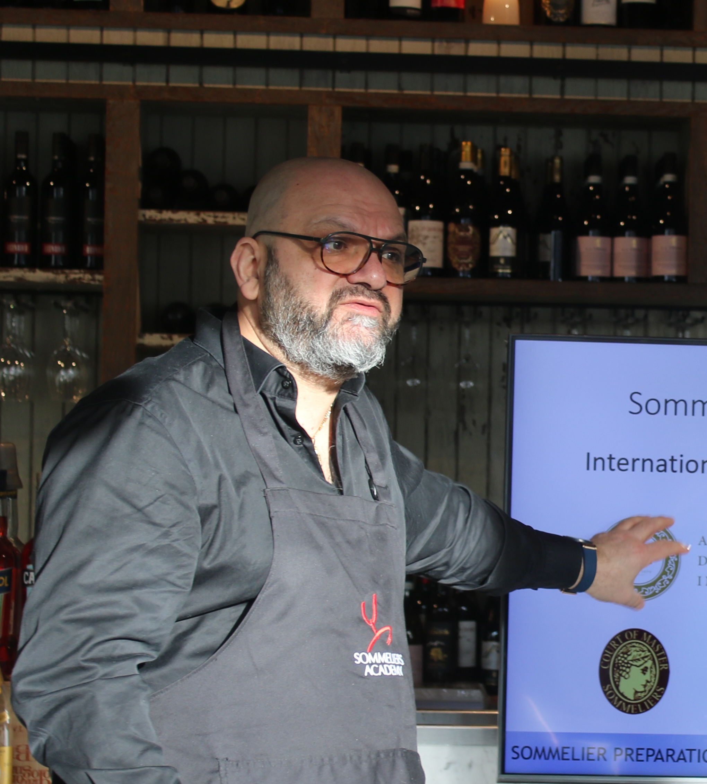

Joseph Mounayer is a sommelier, educator, and wine leader whose career spans hospitality, competition, and international wine advocacy. He serves as President of ASLIB, the Association des Sommeliers du Liban, and is Head of Wine at Götaplatsgruppen.
His work extends across both restaurant leadership and the wider global wine community. Joseph is an ambassador for Citadelles du Vin in Lebanon and Sweden, The Golden Vines in Lebanon and the Gulf, and Mondial des Vins Extrêmes in Lebanon and Sweden. He has also served as a sommelier judge in national competitions in Sweden, Denmark, and Lebanon.
At Sommeliers Academy, Joseph brings a strong combination of practical hospitality experience, international perspective, and professional tasting discipline to his teaching.